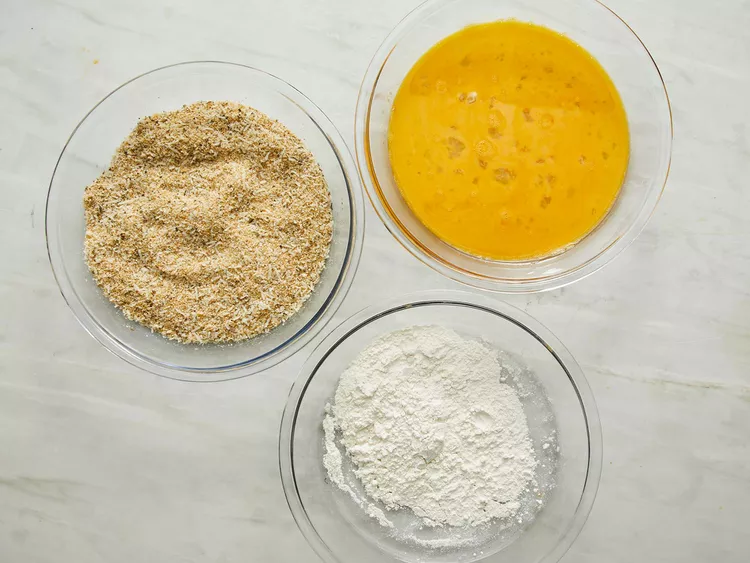
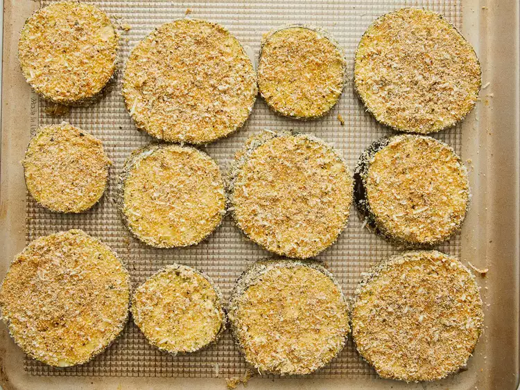
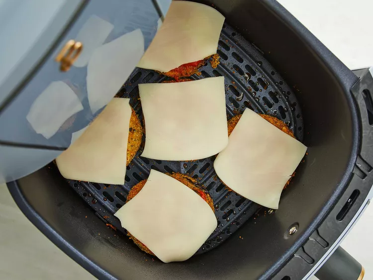

Home
Air Fryer Eggplant Parmesan

Description:
These air fryer eggplant Parmesan rounds are oil-free, yet they are crispy
and crunchy. All thanks to an air fryer! They are good eaten right out of
the air fryer or topped with marinara sauce and mozzarella cheese. Either
way, they are delicious.
ingredients:
- ½ cup Italian bread crumbs
- ¼ cup freshly grated Parmesan cheese
- 1 teaspoon Italian seasoning
- 1 teaspoon salt
- ½ teaspoon dried basil
- ½ teaspoon garlic powder
- ½ teaspoon onion powder
- ½ teaspoon freshly ground black pepper
- ¼ cup flour
- 2 large eggs, beaten
- 1 medium eggplant, sliced into 1/2-inch rounds
- 1 cup marinara sauce, or more to taste
- 8 slices mozzarella cheese, or as needed
Steps:
-
Combine bread crumbs, Parmesan cheese, Italian seasoning, salt, basil,
garlic powder, onion powder, and black pepper in a shallow bowl. Place
flour in a separate shallow bowl and beaten eggs in a third shallow
bowl.

-
Dip sliced eggplant first in flour, then in beaten eggs, and finally
coat with bread crumb mixture. Place coated eggplant on a tray and let
rest for 5 minutes.

- Preheat an air fryer to 370 degrees F (185 degrees C).
-
Place breaded eggplant rounds in the air fryer basket, making sure they
are not touching; work in batches if necessary. Cook for 8 to 10
minutes, flip each round, and cook until desired crispiness is achieved,
4 to 6 minutes more.
-
Top each eggplant round with marinara sauce and 1 slice of mozzarella
cheese. Place the basket back in the air fryer and cook until cheese has
started to melt, 1 to 2 minutes. Repeat with remaining eggplant, if
necessary.

- Serve hot and enjoy!